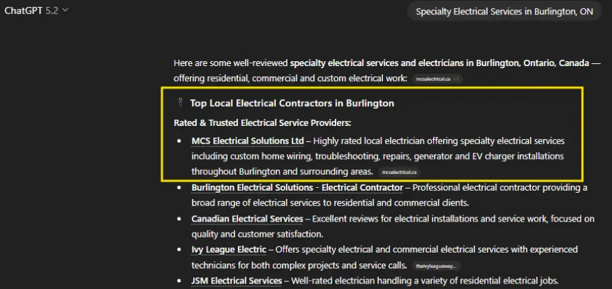
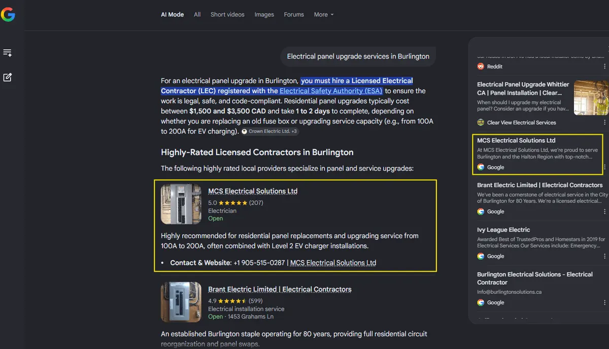
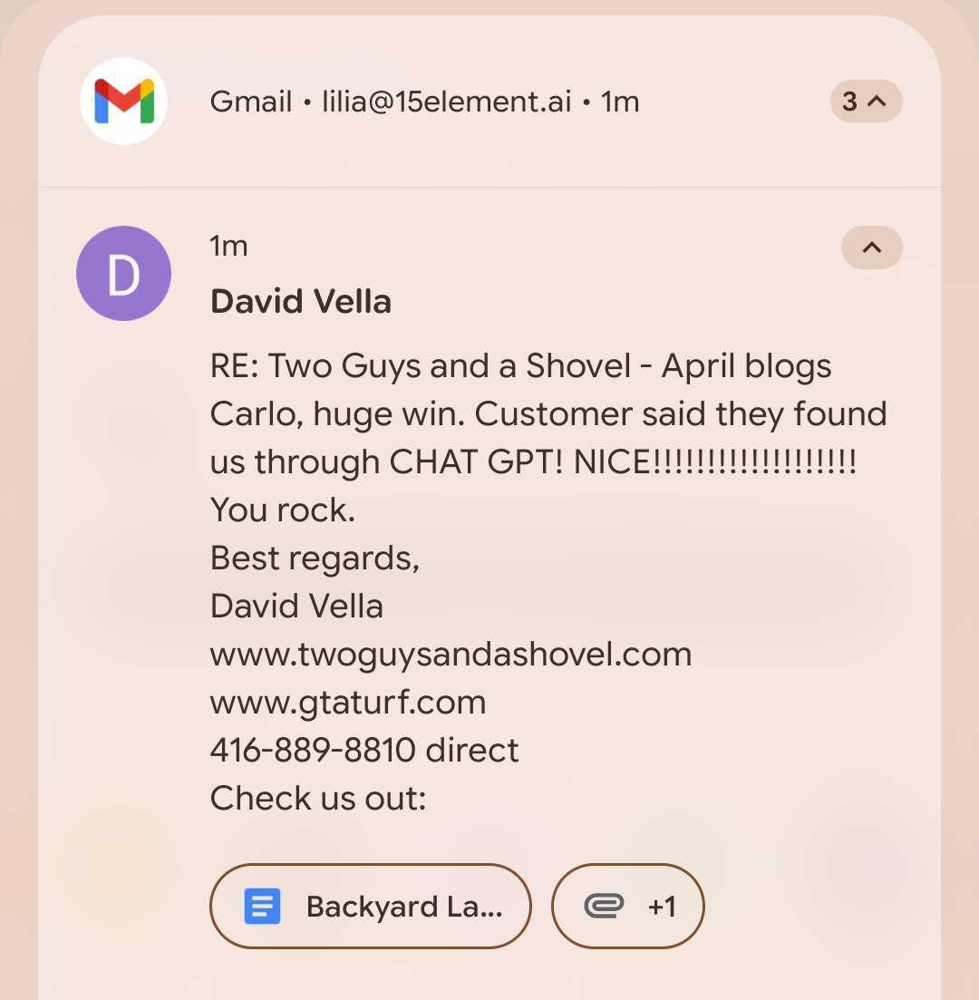

Every trades business owner I talk to in 2026 has heard the same pitch: "AI will transform your business." Most of the time it's vague and the next slide is a chatbot. This is the version that actually moves the dial — and the two trades businesses we work with in Canada (one electrician, one landscaper) that prove it. The discipline isn't "use AI." It's making sure AI uses you — that when a homeowner Googles a problem or asks ChatGPT who to call, your business is the answer.
If you run a trades business and you're tired of bidding on the same Google Ads as everyone else, this is the path that compounds. Here's what it looks like with real Canadian numbers.
The two kinds of "AI for trades" — don't confuse them
When someone says "AI for trades", they usually mean one of two things:
- Operational AI — scheduling tools, voice agents handling phone overflow, quoting software, dispatch optimization, AI invoicing. Real, useful, worth evaluating. But it doesn't bring you the next job. It makes the jobs you already have run smoother.
- Search AI — making sure your business gets found and cited when a buyer searches Google or asks ChatGPT, Gemini or Perplexity who to call. This is the part that actually grows the business, because it adds buyers who weren't already in your pipeline.
This article is about the second one. Operational AI is a different conversation — and the order matters. If you don't have enough leads, optimizing the operations of the leads you have doesn't fix the problem.
Why trades is the category where this works best right now
Skilled trades is one of the categories where AI search has the widest open lane. Three reasons:
- Buyer behaviour has shifted. In 2026, a homeowner with an electrical problem doesn't open the Yellow Pages — they Google "electrician near me", or they ask ChatGPT "who should I call for a panel upgrade in Burlington". The buyer is already in the new layer. Most trades businesses aren't.
- Local competition hasn't woken up. The number of electricians, plumbers, landscapers, HVAC techs and contractors who have done real structured content with schema markup, FAQ answers built for AI engines, and consistent entity signals across the web is near zero in most Canadian cities. The first business in a city that does it becomes the cited answer — and once a model cites you, it tends to keep citing you.
- The buyer trusts the AI answer more than they should. When ChatGPT says "MCS Electrical in Burlington has strong reviews and certifications", the buyer takes that as a recommendation, not a search result. The conversion rate from an AI citation is materially higher than from a Google ad. The business owners who notice this first get to live in that gap for the next 18 months.
Case 1 — MCS Electrical (Burlington): position 23 to Top 5 in ChatGPT
Category: Certified Electricians (Residential & Commercial) · Location: Burlington, Ontario · Website: mcselectrical.ca
The skilled trades category in Burlington is dense — dozens of certified electricians with overlapping service areas, similar pricing, and most of them paying for Google Ads to stay visible. MCS Electrical's challenge wasn't quality of work; it was being chosen before the price comparison started.
What we worked on, in order:
- Entity foundation. LocalBusiness schema with proper NAP consistency across every directory, service-area pages that answer the buyer's first question ("do you cover my neighbourhood?"), and certifications structured so search engines understand them as authority signals — not decoration.
- Map Pack discipline. Google Business Profile activity, review-velocity (now 130+ reviews at 5.0★), category-correct primary category, citation hygiene across Canadian trades directories. Map Pack is owned by businesses that earn it consistently.
- Answer-first content. Pages built for the questions a Burlington homeowner actually asks before they call — panel upgrades, code compliance, 24/7 emergency callouts — with FAQ schema that AI engines can quote verbatim. Not stock photos of someone in a hard hat. The work.
Results over 7 months (100% organic, no ad spend):
- Clicks: 24 → 53 (+121%)
- Impressions: 2,818 → 5,664 (+101%)
- Leads: 37 → 57 (+54%)
- "electrician Burlington" — Google position: 23 → Top 10
- Google Map Pack: Top 3 for Burlington electrician searches
- ChatGPT — "electrician Burlington" answer: ranked Top 5
- Reviews: 5.0★ rating with 130+ reviews


The Top 5 ChatGPT citation matters more than it sounds. When a homeowner asks ChatGPT for an electrician in Burlington and MCS is one of the five names that comes back, that's a pre-qualified lead arriving with trust the buyer brought with them. No ad clicks. No competition for attention on the SERP. Just being the answer.
Do you want your trades business to be the ChatGPT answer in your city?
60-minute free diagnosis. We audit your presence on Google + ChatGPT, Gemini and Perplexity for your category and city, and tell you honestly what's reachable in 6 months.
Case 2 — Two Guys and a Shovel (GTA landscaping): "found us through ChatGPT"
Category: Landscaping & Outdoor Living (GTA) · Location: Greater Toronto Area · Website: twoguysandashovel.com
Two Guys and a Shovel is a GTA landscaping business — artificial turf, garden design, hot tub and pool installation, commercial work. The category is brutally competitive on Google: dozens of landscapers within a 30 km radius, all paying for the same keywords, all with similar portfolios.
The architecture we built focused on the same disciplines that move trades businesses anywhere: a clean services structure (services, artificial lawn turf installation, commercial applications, garden design build, GTA landscaping), blog content built around real homeowner questions (artificial grass for dogs, hot tub installation, pool installation in GTA), and Google Maps + organic search working in parallel to build verifiable local authority.
The signal that this is working showed up in the most direct way possible — a customer told them they found them through ChatGPT. Not "I Googled landscapers near me." Not "I saw your ad." I asked ChatGPT and it mentioned you.

That's the moment a trades business owner realizes the layer is real. One customer saying it is a data point. Watching it happen across categories — electricians, landscapers, dentists, osteopaths, smart home installers — is a pattern.
Detailed Google Search Console and ChatGPT citation metrics for Two Guys and a Shovel will be added to this article once the data integration is in place. The owner's message above is the qualitative signal; the quantitative case study follows when the numbers are clean.
What "AI for trades" actually means in practice — 4 disciplines
If you strip the buzzwords and look at what actually moves a trades business in search in 2026, it's four disciplines done consistently. None of them are exotic.
1. Entity foundation that AI engines can read
Schema.org markup for LocalBusiness, Service, FAQPage. NAP consistency across every directory the trade category uses. A clean services taxonomy that mirrors how the buyer searches, not how you organize the business internally. This is the part the AI engines actually parse to decide if your business is "real" enough to mention.
2. Answer-first content for real buyer questions
Every page answers a question a real customer asks in the first call. Not a 1,500-word essay on the history of your trade — a direct answer in the first two sentences, then the context. This is the format AI engines quote, and it's the format a buyer on a phone wants. The two coincide more than people think.
3. Local entity signals (reviews, citations, GBP discipline)
Review velocity, response rate, citation consistency in trades directories (HomeStars, Yelp, BBB, Angi where relevant in Canada), category-correct GBP setup, and activity that signals the business is operating today — not three years ago. AI engines lean heavily on these signals to filter out abandoned listings.
4. AEO discipline — built for the answer engine, not just Google
FAQ schema on real questions. "Who should I call for X in [city]" content built in the exact format ChatGPT, Gemini and Perplexity scan for. Authority signals that survive the model's filtering — third-party mentions, consistent business information, content that explicitly answers the questions the engine sees most often.
What "AI for trades" is not
To be clear about what this work doesn't replace:
- It's not a chatbot. Chatbots help visitors who already arrived. We're talking about getting visitors to arrive in the first place.
- It's not a magic content generator. Auto-generated content for trades pages gets ignored by AI engines because they detect it and discount it. The signal is built by structured, specific, verifiable content — not volume.
- It's not a replacement for the work. No amount of SEO/AEO discipline fixes a business with bad reviews, unclear pricing, or inconsistent quality. The discipline amplifies what's already real about the business. If the business is good, AI search compounds that. If it isn't, no amount of structure helps.
If you run a trades business in Canada and you want this
The honest path: book a 60-minute free diagnosis. We audit your current presence in Google plus the three AI engines (ChatGPT, Gemini, Perplexity) for your category and city, find the gap, and tell you what's reachable in 6 months and what isn't. No script, no canned slide deck — we run the actual queries a buyer in your city would run, and we show you what shows up. If there's a real opportunity, we'll say so. If your category is already saturated or your business needs a different conversation first, we'll say that too.
If you want to read more before the call: see the full Canada SEO case studies page (four real cases including MCS Electrical), or look at how our AEO & SEO service works.